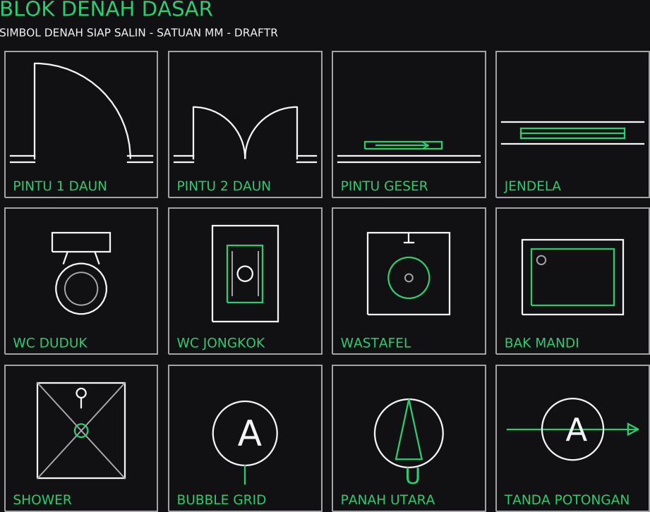
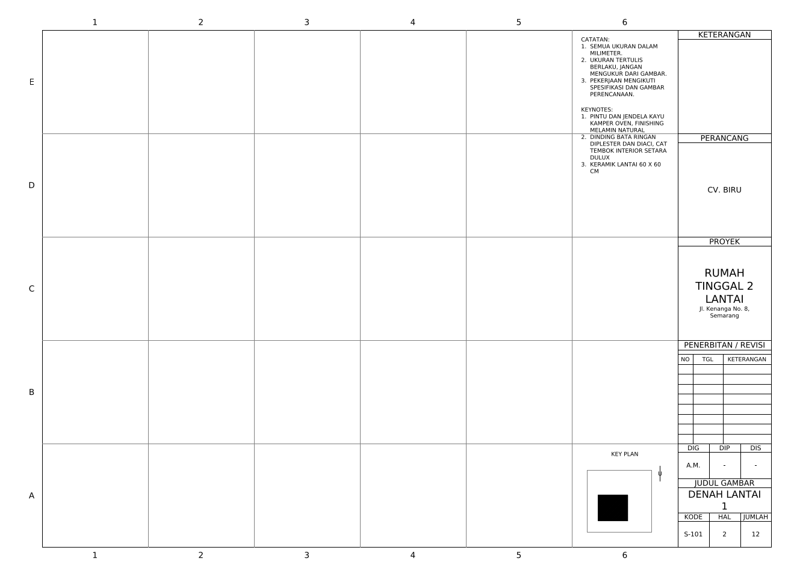
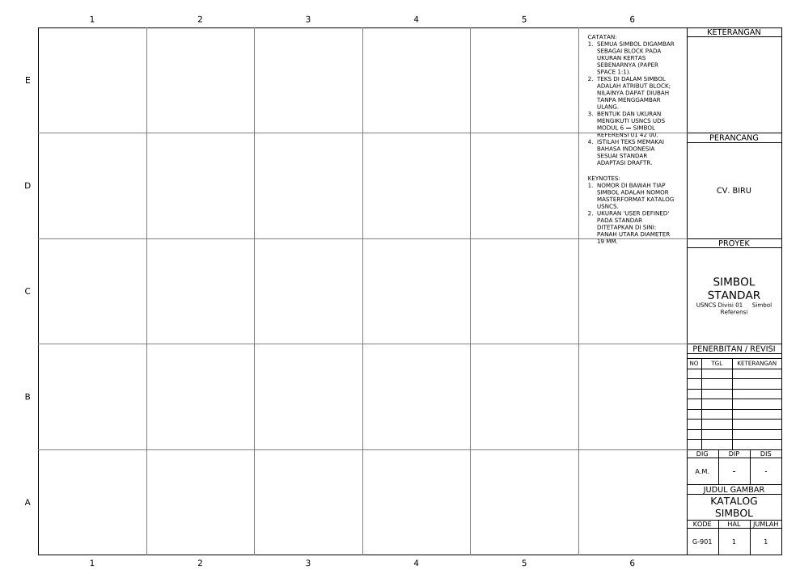
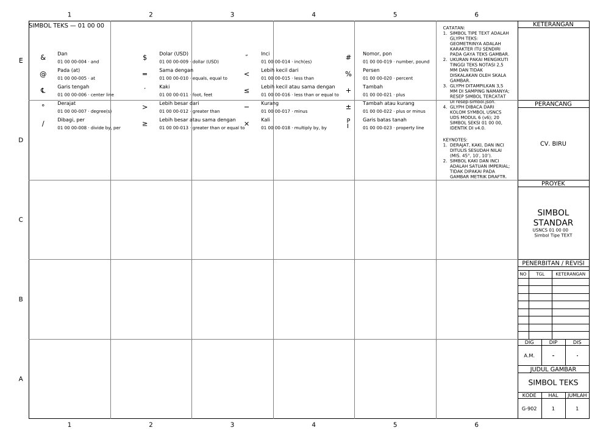
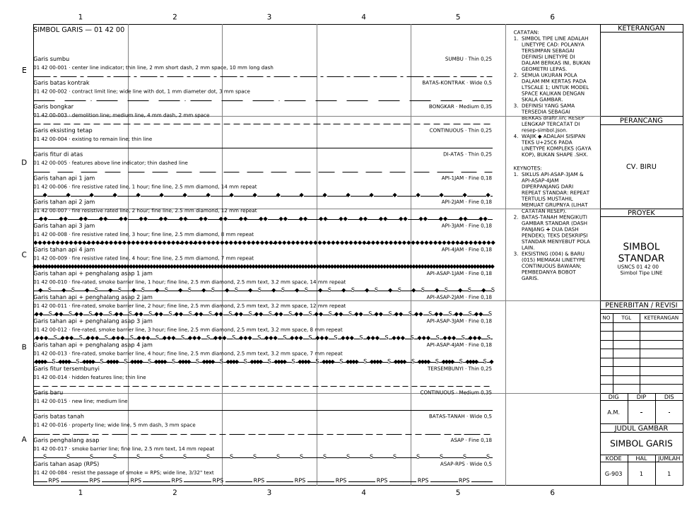

Paket Awal v1 — Gratis
Library DWG untuk drafter Indonesia.
Template lembar A3, katalog simbol, dan blok denah dasar — digambar sebagai entitas CAD asli, satuan milimeter, siap salin ke gambar kerjamu. Tanpa gambar ulang, tanpa geometri polos hasil converter.

Isi paket
5 file DWG — masing-masing juga tersedia sebagai DXF.
Blok Denah Dasar
12 simbol denah siap salin: pintu 1 daun, pintu 2 daun, pintu geser, jendela, WC duduk, WC jongkok, wastafel, bak mandi, shower, bubble grid, panah utara, dan tanda potongan.

Template Lembar A3
Lembar kerja A3 standar draftr: grid lembar, blok kop, tabel revisi, dan kolom catatan — mulai gambar baru dari lembar yang benar.

Katalog Simbol Referensi
Lembar G-901: 18 simbol referensi gambar kerja — penanda potongan, elevasi, detail, bubble grid, dan penanda revisi.

Katalog Simbol Teks
Lembar G-902: simbol teks dan anotasi — leader, penanda material, dan keterangan standar gambar kerja.

Katalog Simbol Garis
Simbol garis dan linetype standar: garis potongan, garis tersembunyi, garis sumbu, dan pola garis gambar kerja.
Cara pakai
Tiga langkah, langsung bekerja.
01
Unduh & buka
Ambil ZIP-nya atau file satuan. Semua file bersatuan milimeter dan digambar 1:1 di Model — buka di AutoCAD versi 2010 ke atas.
02
Salin simbolnya
Buka file katalog atau blok, pilih simbol yang perlu, lalu COPYBASE dari titik acuannya ke gambar kerjamu.
03
Jadikan block
Untuk simbol yang berulang, bungkus sekali dengan WBLOCK atau BLOCK — setelah itu tinggal disisipkan, bukan digambar ulang.
Digambar sebagai entitas, bukan garis polos.
Setiap simbol di paket ini tersusun dari entitas CAD yang semestinya, mengikuti standar gambar draftr — adaptasi USNCS dengan skala metrik dan teks Indonesia. Gratis dipakai untuk pekerjaan pribadi dan kantor; jangan dijual ulang sebagai paket.
- FormatDWG (AC1032) + DXF
- SatuanMilimeter · 1:1 di Model
- Isi5 file · 30+ simbol
- LisensiGratis pakai · no resale